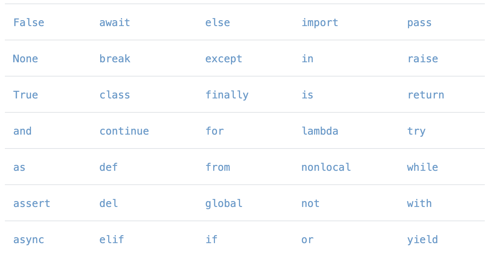

15 minutes
Variables
Variables and data types
Perhaps the most fundamental of all Python fundamentals is the concept of a variable. The first thing you need to know about variables is what they’re used for:
A variable is a container for saving data.
A theme in this set of notes will be illustrating different concepts by way of examples. And I can think of no better way to introduce variables than with the following (not-so-randomly-chosen) use case.
If you’re like me, you have a hard time remembering important dates like birthdays. To rectify this, we can store birthdays as variables.
>>> importantBirthday = 'July 31'
Now, if I want to remember this important birthday, I can do the following
>>> print(importantBirthday)
July 31
and as you can see, Python remembers the birthday for me! Note that when we define a variable, we assign its value by using the equals sign (=).
Variables come in all shapes and sizes. Each variable you assign in your future Python programs will have what’s called a data type.
A data type specifies what kind of data you’re saving in your variable.
The data type of the importantBirthday variable is called a string, since it’s a sequence of characters in quotes. Note that strings can also be defined using double quotes, i.e., we could just as well have defined importantBirthday = "July 31".
Two other important data types are integers and floats, both of which are kinds of numbers. Here are some examples:
>>> numCats = 2 # this is an integer
>>> digitsOfPi = 3.14 # this is a float
An integer is a number without decimal points; anything in the range . . ., -2, -1, 0, 1, 2, 3, . . . counts as an integer. A float (short for “floating-point”) is a number with decimal points, e.g., 3.1415 or 2.71828. In a future lesson on Mathematical operations, we’ll learn about how integer and float variables can be used to do mathematical calculations in Python.
Strings, integers, and floats are three of the most common data types in Python. In this set of notes, we’ll meet plenty of other data types, but for now, let’s review these three main characters.
Exercise 1 (Review of data types)
What are the data types of the following variables?
>>> a = -1.242
>>> b = 'Claude Debussy'
>>> c = '2.30'
>>> d = -600
>>> e = 5.0
Rather than giving you the answers to this exercise, I’m going to give you the tool you need to check your own work. In Python, if you want to check the data type of a variable, you can use the type keyword. Returning to our earlier examples, the type keyword tells us the following:
>>> type(importantBirthday)
<class 'str'>
>>> type(numCats)
<class 'int'>
>>> type(digitsOfPi)
<class 'float'>
Don’t worry about the word “class” in the output; we’ll get to that in a future lesson. The key thing here is that the type keyword tell us that importantBirthday is a string (“str” for short), numCats is an integer (or an “int”), and digitsOfPi is a float.
Now you can check your work for Exercise 1 using the type keyword.
Booleans
One more data type worth mentioning at this early stage is the bool type. Bool is short for Boolean, which eponymously refers to the nineteenth century mathematician George Boole. Unlike strings, integers, and floats, bool variables can take on only two values: True or False (the capitalization here is important; Python will not interpret “true” or “false” as a bool). For example:
>>> type(True)
<class 'bool'>
>>> type(False)
<class 'bool'>
Bool variables are quite useful when defining logical expressions, as we’ll see very soon.
Exercise 2 (Variable reassignment)
When you assign a value to a variable, the data type of that variable takes on the data type of the value. For example, if I were to write
>>> mySentence = 'The knights who say ni!'
then the data type of mySentence would be a string. But what happens when I reassign the value of the mySentence variable?
>>> mySentence = 'The knights who say ni!'
>>> mySentence = 23
As you’d expect, type('The knights who say ni!') evaluates to <class ‘str’> whereas type(23) evaluates to <class ‘int’>. Take a second to check the type of mySentence in your Python interpreter. Does it align with you expectation?
The lesson here is that the data type of a Python variable can change when its value is reassigned. This is one feature that makes Python especially easy to work with for beginners, because this ability to seamlessly change the data type of a variable doesn’t exist in all programming languages (e.g., those that are statically typed like Java or C++).
Printing variables with f-strings
In the previous lesson on interacting with Python, we learned about Python’s print function. Based on that lesson, you should have a strong intuition about what the output of the following script – let’s call it dessert.py – will be.
myFavoriteDessert = input("What is your favorite dessert? ")
print(myFavoriteDessert)
This script just prints your favorite dessert to the console. However, it’s plausible that you would like to add more information here. For example, you may want to print “Your favorite desert is: " before printing the value of myFavoriteDessert.
How should we do this? It turns out that there are many methods, but for now, I’m just going to share my favorite method and leave the rest to a future lesson. This method uses what’s known as an f-string (or, in jargon, formatted string literals), for reasons that will become obvious shortly. Here’s what you should remember about f-strings:
f-strings allow you to insert variables directly into strings.
To see an f-string in action, consider the following new version dessert.py:
myFavoriteDessert = input("What is your favorite dessert? ")
print(f"Your favorite dessert is: {myFavoriteDessert}.")
Let’s compare the two versions of our script. In the second line, we added an “f” before the quotation mark, we added text saying “Your favorite dessert is: “, and after that, we used curly braces to wrap our variable. Here’s the output:
$ python dessert.py
What is your favorite dessert? cupcakes
Your favorite dessert is: cupcakes.
Note that if you forget that leading “f” before the first quotation mark, the string will not print correctly. You can use f-strings with all of the data types we’ve met so far. In the following exercise, you’ll see a few more examples of how f-strings can be used.
Exercise 3 (f-strings in action)
Let’s have some more fun with f-strings. Your job: Write a program that prompts the user for input to a madlib. Never heard of madlibs before? Allow me to explain. When doing a madlib, there are two players: a questioner and a responder. The questioner either obtains or thinks up a story and removes several words from that story without showing the story or the removed words to the responder. At each location where there is a missing words, the questioner asks the responder to supply a word. Usually the questioner gives clarification about what part of speech the responder should supply. And as the responder supplies words, the questioner fills in the blanks, resulting in an often wacky, off-color, or sweet story depending on the chosen words.
In line with tradition, we’re going to reproduce the classic 1982 madlib called “The Magic Computers.” Your program should look something like this:
$ python madlib.py
Enter a noun: bird
Enter a plural noun: trees
Enter a verb (present tense): salt
Enter a verb (present tense): sail
Enter a part of the body (plural): toes
Enter an adjective: floral
Enter a plural noun: wine glasses
Enter an adjective: sparkley
Today, every student has a computer small enough to fit into their
<bird>. They can easily solve math problems by simply pushing the
computer's little <trees>. Computers can add, multiply, divide,
and salt. They can also <sail> better than a human. Some
computers are <toes>. Others have a/an <floral> screen that shows
all kinds of <wine glasses> and <sparkly> figures.
Naming variables
Before moving on to more advanced topics, let’s talk a little bit about how we’re allowed to name variables. In Python, variable names can be arbitrarily long, and they can contain numbers, letters, and the underscore (_) symbol. For example, all of the following are valid variable names:
>>> myFavoriteNumberIs23 = "no, it's actually 24. . ."
>>> look_at_all_these_underscores = True
>>> HELLO_WORLD = 100
>>> hello_world = 0
>>> __ahhhhhhh = 0.12345
There are a few caveats to naming variables.
- Leading numbers. A variable can’t start with a number, so
8IsCoolwould not be a valid variable name. - Spaces. Variable names also cannot contain spaces, so
X AE A-Xii(the name of Grimes and Elon Musk’s first child together) is an invalid variable name. - Capitalization. Capitalization also matters when defining variables. In the above code snippet, we defined
HELLO_WORLDandhello_worldas two separate variables. You can check in your console that they stored different values. - Other symbols. Variable names cannot contain symbols other than the underscore, so something like
IWantAllThat$$$wouldn’t work.
Don’t worry about memorizing these rules. As you write more Python, these rules will become second nature to you. And when you forget these rules, Python has a helpful mechanism to get you back on track. . .
Error messages
When you use an invalid variable name, Python will always let you know by raising what’s known as a SyntaxError.
>>> IWantAllThat$$$ = True
File "<stdin>", line 1
IWantAllThat$$$ = True
^
SyntaxError: invalid syntax
Notice that the error message points toward the first dollar sign, meaning that this is the piece of the variable name that caused the error. Why does it identify the first dollar sign as causing the error instead of the last? In short, when Python interprets your code, it scans each line from left to right, so the leftmost incorrect character in your variable will always be the one identified by the error.
In Python, there are many other kinds of errors. Sometimes, when your code throws an error message, it’s easy to get discouraged. But getting an error message doesn’t mean that you’re a bad programmer! In fact, messages can be extremely helpful when debugging your code. So when it comes to error messages, here’s the mantra:
Error messages are designed to help you – the programmer – figure out what went wrong in your code.
You should embrace error messages, especially those that give you specific feedback about what went wrong.
Exercise 4 (Variable names)
Which of the following are valid variable names? And if a variable name is invalid, what will the SyntaxError point to when the error is thrown?
>>> TheDigitsOfPiAre3.14 = True
>>> M3rryChristma5 = 'ho ho ho'
>>> Eight-five = 3
>>> Wh@tIsMyN@me = 'Jane Eyre'
Try it out in your terminal.
Protected keywords
There’s one more caveat worth mentioning here, and I’ll illustrate it by way of an example. Let’s say you’re a busy teacher, and you want to keep track of how many classes you’re teaching. You might do this by defining a variable called “class.” Let’s see what happens when we try to do that.
>>> class = 5
File "<stdin>", line 1
class = 5
^
SyntaxError: invalid syntax
Why doesn’t this work? According to the rules we listed above, “class” should be a valid variable name, shouldn’t it?
It turns out that Python has a set of so-called “protected” keywords which cannot be used as variable names. As of latest version of Python (Python version 3.10), there are 35 keywords in Python. Here’s the full list:

After scanning this list, you may have noticed that we’ve already met three of these keywords! In addition to “class” in the above example, we’ve also seen “True” and “False” when Boolean data types were introduced. If you continue reading these notes, you’ll encounter many of these keywords.
Readibility
How you choose your variable names may seem like a small detail, but in my view, this is one of the most important parts of writing a program. If you take one thing away from this lesson, let is be this:
As a programmer, you will read ten times more code than you will write.
And ten is likely an underestimate here. It’s crucial that your code is readible, and readibility is heavily tied to how you name your variables. For example, if I wanted to create a variable that counted the number of cats I have, which variable do you think is more readible? This:
>>> n = 3
or this:
numCats = 3
In other words, if someone else had to read your code, how quickly would they be able to figure out what’s going on in your program? As a programmer, you should always try to focus on writing code such that the next person who interacts with your code can get up to speed as fast as possible.
Variable comparison
Now that we’ve learned about Python variables, it’s time to think about how we can compare two variables. To illustrate this, let’s start by defining a few variables that we can play around with.
>>> numBananas = 1
>>> numOranges = 2
>>> numGrapes = 2
>>> numStrawberries = 3
(Yes, I did just finished cutting up a bowl of fruit.) One important task in Python is to check whether two variables are equal. To do so, we use two equals signs, e.g.,
>>> numOranges == numGrapes
True
>>> numGrapes == numStrawberries
False
As you can see, checking whether two variables are equal returns a Boolean variable: True if the variables are equal, and False otherwise. A common mistake in Python is to confuse variable assignment, which uses a single equal sign (=), with variable comparison, which uses two equal signs (==), so it’s important to take care when bashing your little finger on that equals sign key!
You can also check whether two variables are not equal to one another using an exclamation point followed by an equals sign.
>>> numOranges != numBananas
True
>>> numOranges != numGrapes
False
Aside from checking whether two variables are equal or not, we can also check whether one variable is larger or small than another. To do so, we use the > key to denote “is larger than” and the < key to denote “is smaller than.” Take a look at the following examples:
>>> numOranges > numStrawberries
True
>>> numBananas < numGrapes
True
>>> numGrapes > numStrawberries
False
Similarly, you can use >= to check whether one variable is larger than equal to another variable; we can write <= to check whether a variable is less than or equal to another variable.
Exercise 5 (Comparing variables)
So far, we’ve shown how you can compare two integer variables. However, in Python, you can compare other kinds of data types. What do you think the outcomes of these comparisons will be?
>>> True == False
>>> 3 > 2.15
>>> 'Rachel' != 'Ross'
>>> 4.2424 <= 4.2424
>>> 4.2424 < 4.2424
Comparing variables with different data types
Somewhat unintuitively, it is sometimes – but not always – possible to compare two variables that have different data types. For example, in some cases, it can be useful to think of the number 1 as denoting “true” and the number 0 as denoting “false.” This convention arises in various fields such as circuit design. To meet this convention, Python allows you to compare bools to integers.
>>> True == 1
True
>>> False == 0
True
Here are some more examples which compare variables of different data types.
>>> 1 == 1.0
True
>>> 'a' > 'b'
False
In these notes, we won’t provide an exhaustive list of what you can and cannot compare. This is your time to explore! What happens when you compare a string to an integer? What if you compare a Boolean to a number other than 0 or 1? Try it out!
Review
Let’s summarize what we’ve learned in this lesson.
-
Variables and data types. A variable is a container for storing data, and variables are defined with the equals sign. Every Python variable has a data type. In this section, we met three data types: strings are sequences of characters in quotes, integers are numbers without decimals, and floats are numbers with decimals.
-
Exercise 1 (Review of data types). The type keyword allows you check the data type of a variable.
-
Boolean data types. Boolean or bool variables can take on one of two (logical) values: True or False.
-
Printing variables with f-strings. f-strings allow you to insert variables into strings.
-
Naming variables. Python has strict conventions on how variables can be named. Variable names can be artbirarily long, and can contain numbers, letters, and underscores. Variable names cannot start with numbers and they cannot include spaces or symbols other than the underscore.
-
Error messages. Error messages let you know when your code fails. SyntaxErrors tell us when a variable has an invalid name.
-
Protected keywords. A small set of “protected” words cannot be used as variable names in Python, including “True”, “False”, and “class.”
-
Readibility. As a programmer, you’ll read at least ten times as much code as you’ll write. You should always strive to write code that is easy for others to read.
-
Variable comparison. You can compare two variables in Python in various ways: == and != are used to check whether two variables are equal or not equal respectively, > and < are used to check strict inequalities, and >= and <= are used to check non-strict inequalities (e.g., greater than or equal to).
-
Comparing variables with different data types. In some cases, you can compare variables with contrasting data types, e.g.,
True == 1evaluates to True.
Additional exercises
Exercise 6 (True or false)
_my_favorite_food_is_popcorn_is a valid variable name.'abc' < 'd'evaluates to True.- The data type of 3.000000 is int.
False >= Trueevaluates to False.- Defining strings with double quotes instead of single quotes will throw an error.
type('5.555')returns float.- When I reassign the value of a variable, it’s data type will always change.
Exercise 7 (Caveats)
- How many values can a Boolean variable take on?
- Which symbols are you allowed to use when naming a variable in Python?
- Do <= and >= check for strict or non-strict inequalities?
- What is the maximum length for a variable name?
Congratulations! You made it through your first full lesson in Python. Things will only get more exciting from here, so make sure to check out the next note in this series.